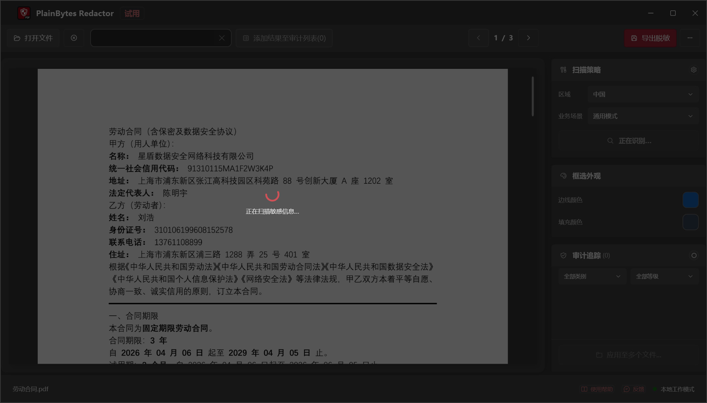
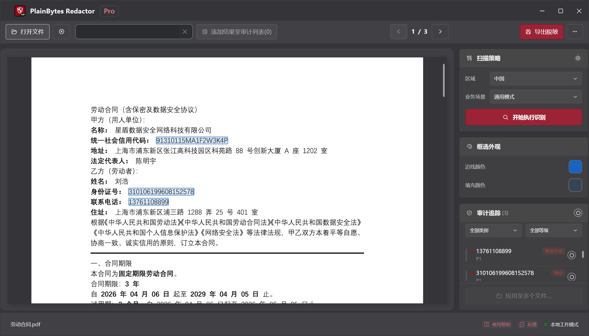
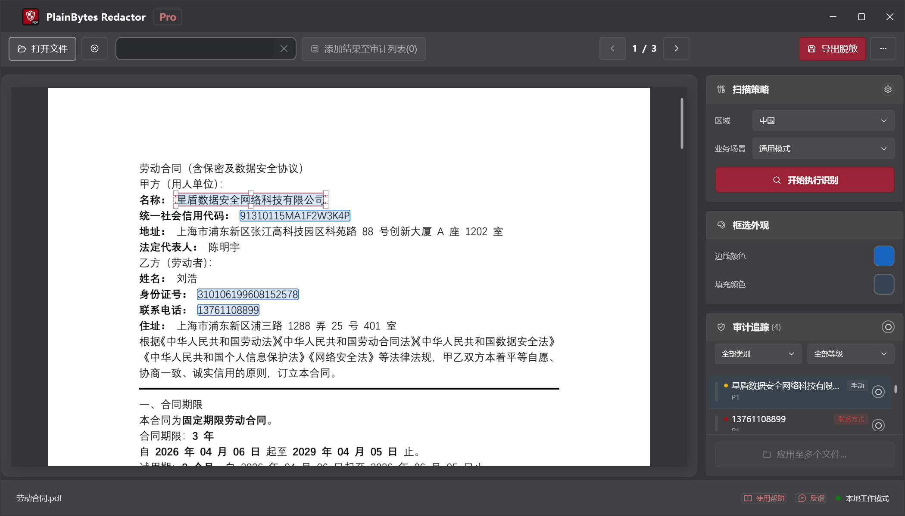
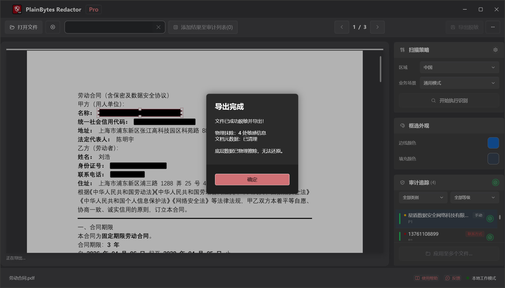

01
打开并扫描
加载 PDF，按您所在地区的格式运行检测。
PlainBytes Redactor
PlainBytes Redactor 完全在您的电脑上运行——不上传云端，没有 AI 服务查看您的文件。支持 28 国/地区标识符格式的自动检测，导出前可人工复核。
工作原理

加载 PDF，按您所在地区的格式运行检测。

查看每项标记及其风险类别。

定稿前可添加、删除或微调。

内容与元数据永久移除。
大多数脱敏工具——尤其是 AI 驱动的——需要先把文档上传到服务器才能查找并删除敏感信息。对受保密义务、特权规则或审计独立性约束的人而言，仅为脱敏一份文件就承担这种风险并不合理。
PlainBytes Redactor 在您自己的设备上完成全部检测与处理。文件不会离开您的电脑，无需账号、无需同步、也没有服务器参与。
律师
在电子提交或共享证据材料前，脱敏社保号、财务信息及其他 PII，无需将客户文件经第三方云服务中转。
会计师
在共享审计工作底稿、纳税申报或年终报告前，脱敏账号、社保号及客户财务细节，无需将客户数据经第三方云服务中转。
人力资源团队
在与审计师、法律顾问共享或响应数据请求前，脱敏录用函、离职记录或人事档案中的薪资、社保号及个人细节。